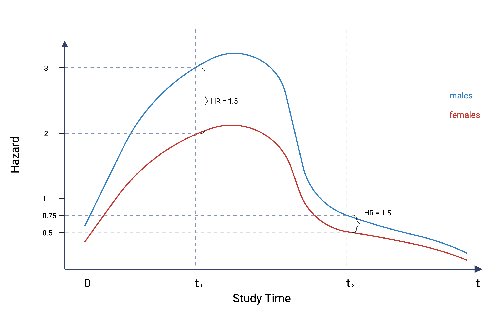

Survival Analysis - Under the Hood
Welcome to today’s post which is based on a talk that some of you may have heard me give in lab meetings. A warning in advance - it’s a bit of a lengthy one, so maybe down a couple of reds to steel yourself before you start. We’re going to discuss survival analysis, but in a similar spirit to how I presented the post on logistic regression a couple of months ago - nothing too fancy, but with an aim that you understand what is happening ‘under the hood’ when you next fire up your stats software to plot a Kaplan-Meier curve or run a Cox model.
Survival analysis is a BIG topic and in university statistics courses, it tends to have an entire subject dedicted just to it, so it’s not just taught as a part of regression modelling, for example. I also don’t find it particularly easy, even now - there are a lot of challenging concepts to understand, and that is in large part because time is such an integral component of everything you do in this area of biostatistics. So, what I hope I can do today is to take a broad-brush approach to survival methods, touch on the concepts that I think are most important in establishing a good base understanding, build in a little intuition for these, and also give you some practical tips along the way.
Let’s get started.
1 What is Survival Analysis?
So what is survival analysis? Any time you’re interested in knowing about the time to some endpoint or event, you are probably wanting a survival analysis. So we might be interested in the time to death or the time to development of new symptoms, or time to relapse in our field. Each of these endpoints is considered an ‘event’.
Time to this event is the outcome variable in survival analysis and it’s continuous and strictly positive (i.e. you can’t have negative times).
We measure time from the start of follow-up to that event. Now an important concept here is the start of follow-up, because this can seem quite vague.
The start of follow-up or observation is also commonly referred to as ‘time 0’, the ‘time origin’ or ‘baseline’. Pick your poison and be consistent. I will use ‘time 0’ through the remainder of this post.
You need to think about time 0 as the point at which the subject becomes ‘at risk’ of developing the event that we’re interested in. In a clinical trial, this is at randomisation. If we’re interested in death from some disease (or maybe relapse in MS), time 0 is usually the point of diagnosis (or possibly the start of treatment). We can also use birth as time 0 and I’ll talk about that in a bit. Keep in mind that survival methods aren’t exclusive to medicine - time to re-offending upon release from jail is an equally valid use of the techniques in social research and criminology.
Finally, an observation is right-censored if the subject still hasn’t had the event at the last point that we observe them. They might have dropped out of the study for various reasons, the study has simply been ended by us, or they may have experienced some other event that prevents further follow-up.
2 What Does Survival Data Look Like?
2.1 Calendar-time format
What does survival data look like? Well - in the case of a prospective study, subjects are usually recruited into the study at different times. To illustrate this, let’s consider this hypothetical dataset of patients diagnosed with some disease that we follow until they either die or are right-censored. The study was planned to recruit for 4 months from Dec 2015 to Mar 2016, and during this period 5 subjects were entered into the study, all starting at various times, but importantly, the exact dates of their start were recorded. All subjects were then followed at regular intervals, and the study was then ended, as planned, in Jan 2017.
Now, this is showing the observation times for each subject as they occurred in calendar-time format. While this reflects the reality of how survival data are collected, it doesn’t really inform you with an intuitive sense of time because you can’t easily make comparisons across subjects.
2.2 Time-on-study format
So, for easier interpretation we can align the start time of all subjects like so - and we call this format, ‘time-on-study’. We can see that Subject 1 dropped out because they moved interstate and couldn’t attend clinic appointments anymore, and so they are considered censored. Their follow-up time was 6 months. Subjects 2 and 4 are also censored, but for a different reason - they were still alive when we decided to end the study and had the study gone on we may have been able to follow them for longer. In any case they were each observed for 12 months. Unfortunately, the other two subjects weren’t so lucky - Subject 3 died after 7 months and Subject 5 died after 4 months of being in the study.
Now, what if we were interested in working out the one-year survival for this sample of patients?
How would you do that?
3 Could We Use Logistic Regression Instead?
You might be thinking at this point, well we’re dealing with a binary outcome and I know that’s what we use logistic regression for. Couldn’t I just count up the number of subjects still alive at one year and divide that by the number of subjects at the start? (this is estimating a proportion which is equivalent in this simple case to a logistic regression with just an intercept in the model).
Well you could do that, but the problem is that you’re then ignoring time and we know that as Subject 1 was censored prior to one-year, we don’t really know what happened to them in the meantime. Were they still alive at one year or did they in fact die? So, we’ve got a choice to make.
3.1 This bed is too soft
This can commonly lead us to assume that the subject survived the full year - and if I’m to borrow a metaphor from a children’s fable, it would have to in this case be Goldilocks. So what we have here is the equivalent of Goldilock’s bed being too soft.
Under this assumption we would include Subject 1 in the proportion numerator and calculate the one-year survival as 3/5 or 60% (we could also get that from a logistic regression model).
\[ \text{Survival (one-year)} = \frac{\text{3}}{\text{5}} = 60\% \]
But there’s something not quite right about that.
Unfortunately, Goldilocks doesn’t sleep well.
3.2 This bed is too hard
Well then, let’s be conservative you might say, and assume Subject 1 has in fact died. In this case we would exclude them from the proportion numerator and calculate the one-year survival as 2/5 or 40%. Can I suggest this is now the equivalent of Goldilock’s bed being too hard, because we know Subject 1 was followed for a full 6 months - that must count for something surely?
\[ \text{Survival (one-year)} = \frac{\text{2}}{\text{5}} = 40\% \]
Poor Goldilocks still doesn’t sleep well.
3.3 Ahhh, just right
When you use survival methods, it in fact turns out that the probability of surviving in the entire year, taking into account censoring is (4/5)x(2/3) = 53%, somewhere in between 40 and 60% - ahhh, Goldilocks has finally found the right bed.
\[ \text{Survival (one-year)} = \frac{\text{4}}{\text{5}} \times \frac{\text{2}}{\text{3}} = 53\% \] I will show you how to get to that number shortly.
3.4 The take-home message
If everybody is observed for at least the same length of time of interest (e.g. 1 year), logistic regression could be used…
… but not if the duration of observation is less for some people.
4 Probability In Survival Analysis Can Mean Different Things
Probabilities can be a little tricky in survival analysis because they are very context-dependent. We can talk about the event probability density. This effectively gives the probability distribution of survival times, which remember is the outcome in survival analysis. We can also talk about the hazard, which is the instantaneous probability or risk of experiencing the event. And then we can also talk about the probability of survival, which tells us how many people haven’t experienced the event by same point in time.
Think of a density function as the continuous analog to a frequency distribution for a discrete variable. An example of the latter might be the number after the roll of a dice, and we can represent the distribution of resulting 1’s, 2’s, 3’s, 4’s, 5’s and 6’s with a frequency histogram. Given that survival times are continuous in nature (i.e. they can take on any positive value - not just discrete values) we represent the distribution of survival times with a density function instead.
4.1 Questions - so many questions…
So, let me get you thinking about this by way of a thought exercise.
If I were to ask you about human mortality; then as a function of age, how would you draw or describe:
The probability of death?
The hazard of death?
Survival?
Following from that:
Is the probability of death greater at 80 or 100?
Is the hazard of death greater at 80 or 100?
And finally:
What’s the difference!?
4.2 Some answers…hopefully
Ok, this is a little bit of a trick question, because it really hangs on semantics.
4.2.1 Marginal probabilities of event
When we talk about the probability of death we are referring to a probability density for death (as a function of age). This is where the area under the density curve (and while this involves a bit of calculus, you don’t need to concern yourself with the details) adds up to 1 - that is everyone is certain to die eventually. In other words the sums of all possible probabilities of dying across all ages equals 1 - and that’s what essentially defines a probability density function. So if you look at the following plot you will appreciate that the overall probability of death gradually increases until about 80 years than actually declines after that. So, in fact the most likely age to die at is about 80, not 100, and that’s simply because fewer people are alive at 100 in the first place. This is what is known as a ‘marginal’ probability of death.
4.2.2 Conditional probabilities of event
Now, the marginal probability of death is a different concept to the hazard of death. The hazard represents an instantaneous or conditional risk of the event happening. Looking at the commensurate hazard function, you will see that it increases exponentially. What this is saying is that the probability or risk that you die in the next year, increases the longer you remain alive. So, the risk of dying in the next year, given that you survived until 100 years is far, far, greater than than case for an 80 year old. These are conditional probabilities. In other words, the risk in the next instant of experiencing the event given you haven’t yet experienced it.
4.2.3 Survival
And then finally the survival. This isn’t difficult. We all die (don’t thank me for cheering you up) - so the survival function eventually reaches 0.
5 Hazard Rates Are Fundamental To Survival Analysis
5.1 Definition
Ok, so having some understanding of the hazard rate is really important in survival analysis. At a basic level, the hazard rate is like an incident rate - the number of new events that occur in a period of time divided by the number of people at risk of that event at the beginning of that period. But it gets a little more complicated because the hazard rate is actually the limiting case of that - the instantaneous event rate. In other words the probability that, given that a subject has survived up to some time t, that he or she has the event in the next infinitesimally small time interval, divided by the length of that interval - and we need to use calculus to be able to compute that. The hazard rate ranges from 0 (no risk of the event) to infinity (certain to experience the event) and over time, it can be constant, increase, decrease, or take some other non-monotonic pattern, which I’ll show you in a moment.
The non-complicated, non-calculus formula for the hazard rate is shown below: Basically the hazard rate can be thought of as the number of events between time \(t\) and \(\delta t\), divided by the number of people at risk of the event at time \(t\) - that gives a conditional probability of the event - and then we divide that by the length of the interval.
\[ h(t) = \lim_{\delta \text{t} \to 0} \frac{\left( \cfrac{ \text{number of events between time t and } (\text{t} + \delta \text{t})}{\text{number of people at risk at time t }} \right) } {\delta \text{t}} \]
\[ = \lim_{\delta \text{t} \to 0} \frac{\text{conditional probability of event between time t and } (\text{t} + \delta \text{t})} {\delta \text{t}} \]
5.2 The hazard rate is related to the incident rate
Let me use a silly example to illustrate this idea of how the hazard rate is related to your run-of-the-mill incident rate. Let’s think about the hazard of getting married at 20 years of age - perilous I might suggest. But jokes aside, how would you work this out? Well we could start by thinking in terms of the incident rate - in a nutshell, count up the number of people married between the ages of 20 and 21 and divide that by the number NOT already married at age 20.
So, let’s say we have 1000 people in a population of interest who still aren’t married at age 20 and we follow them forward and see that 100 get married in the next year. The incident rate is then 100/1000 per year or 0.1 marriages per year.
We could have actually considered a shorter time interval to work out the incident rate - let’s now say 6 months instead of one year. Assuming marriages are evenly distributed then the incident rate is now 50/1000 per 6 months or 0.05 marriages per 1/2 year.
And we could even consider the incident rate in the forthcoming day, which would be 0.274/1000 per day or 0.000274 marriages per day.

So the incident rate differs in these three cases only because we are using different units of time. If we normalised the time period to one year in the second and third scenarios, then we would expect the same number of marriages over the year.
The point of all of this is really to show you that the hazard rate is a limiting case of the incident rate. As the time interval approaches zero, we essentially have an instantaneous estimate of the risk of the event at any point in time and this is what the hazard rate represents. It’s not hard when you think about it.
5.3 Some common hazard function shapes
Let’s have a look at some of the more common hazard function shapes that we might encounter. The shape of the hazard function is determined by the underlying disease, physiological or physical process - so some of these are more realistic in biological systems and some more realistic in mechanical systems.
5.3.1 Constant (exponential)
The first example is of a constant hazard - so the risk of failure at any point in time is the same. This could apply to a light bulb and it could also apply to a healthy individual in a study. When the hazard function is constant we say the survival model is exponential and memoryless, in that the age of the subject has no bearing on the instantaneous risk of failure. Now, this is not the most realistic distribution for biological systems, because - taking a well-known quote from a textbook - “If human lifetimes were exponential there wouldn’t be old or young people, just lucky or unlucky ones”.
5.3.2 Increasing (Weibull)
This is a monotone increasing hazard function. This is one of the more realistic shapes that we expect in the real world - basically as things age, they wear out and are more likely to fail. In industry, cars and batteries are good examples of this. Most biological systems also follow this profile - as humans it’s why our life insurance premiums go up as we age. At 60 you’ve done well to have lived this long, but your short term prospects aren’t as optimistic as they were at 20, and the actuaries build this in to their company’s insurance premiums.
An example in a medical study might be the hazard of metastatic cancer patients, where the event of interest is death. As survival time increases for such a patient, and as the prognosis accordingly worsens, the patient’s potential for dying of the disease also increases.
5.3.3 Decreasing (Weibull)
But not everything wears out over time. This is an example of a monotone decreasing hazard. Many electronic systems actually become more robust over time - believe it or not. In other words, the instantaneous risk of failure tends to be higher earlier on and then subsides with time. So manufacturers can utilise that to their advantage by running the system for a period before shipping and if it passes, it’s likely to be ok for the customer.
In medicine we might see this in patients recovering from major surgery, because the potential for dying after surgery usually decreases as the time after surgery increases.
5.3.4 Increasing/Decreasing (lognormal)
Now we’re getting even more complex with a hazard function that can both increase and decrease. These kinds of shapes become increasingly difficult to generalise, but a specific example might be the hazard for tuberculosis patients since their potential for dying from the disease initially increases and then subsides.
5.3.5 Bathtub
And then finally the ‘bathtub’ shaped hazard function, which I introduced to you before when talking about the risks of humans dying with age. In a general sense, this hazard function reflects the fact that some of the riskiest days of your life are those following birth, and then things start to settle down through and until mid-life.
But gradually, as you age, parts of your body start to wear out and your short-term risk begins to increase again - and if you manage to get to 80 for example, then your short-term risk of dying might be as high as it was during your first months of life.
6 Time Scales
I just want to briefly touch on the idea of time scales. As I mentioned earlier the time origin is defined as the time point at which individuals are first placed ‘at risk’ for the event occurring. But the choice of time origin should really be determined by clinical reasons and there are actually two time primary scales you can consider. By far the most common choice is to simply use time-on-study - so set time = 0 for example, from the point that a subject was diagnosed with a disease; had a surgical procedure; or was randomised into a clinical trial. And this makes sense because the outcome of interest can really only occur as the disease diagnosis or surgical procedure effectively places the subject ‘at risk’ of the outcome.
But in some cases, the distinction is less obvious and using age as the time scale can be more appropriate and actually make more sense. This is usually when you have outcomes of interest that are related more to ageing - e.g. the development of breast cancer, stroke, etc - because subjects may actually be at risk from a time earlier than when they became enrolled into the study. What we are basically suggesting here is that subjects become ‘at risk’ of the disease from birth.
So, when you are thinking about the design and analysis of your next time-to-event study, ask yourself when do subjects first become ‘at risk’ of this event? and on what scale is that underlying risk most likely to change?
6.1 Time-on-study
I want to illustrate these ideas about time scales with a figure and a very simplified example. Let’s assume this is some hazard function for death related to some fictitious disease. The risk of death related to this disease initially increases and then decreases over time.
When we look at the hazard, it’s a fairly safe bet that we would use time-on-study in this case, because the hazard is going to primarily be a function of time since diagnosis more than a function of age. And that’s because the subject becomes at risk of the outcome from the point of diagnosis. So in this case we can expect subjects of any age to have a similar hazard. If we were to estimate a Cox model for example, the hazards are fairly consistent in shape across subjects, regardless of age (note that the intercepts might actually be different for different ages - gives rise to proportional hazards - but the shapes are consistent). In other words, an apples-to-apples comparison of the hazard function at any point in observation time.
6.2 Age
But now let’s assume that the same hazard is instead a function of age instead of time-on-study - for the sake of the exercise let’s say the outcome is now a type of cancer and you become ‘at risk’ of this cancer from birth. So the risk of the outcome this time relates more to just getting older than it does to any other precursor event.
In this case, if we were to use time-on-study as the time scale, we end up trying to compare hazard functions among age groups that are not consistent in shape on that time scale. So, the hazard for a 20 year old entering the study might be different to the hazard for a 60 year old entering the study. Now we are attempting an apples-to-oranges comparison of the hazard function at any point in observation time and that is less than ideal - instead, we’re better off using age as the time scale on which to base our computations.
When using age as the time scale for the analysis, age is automatically corrected for in the analysis and does not require specific covariate adjustment.
7 It’s A Choose-Your-Own Survival Analysis Adventure
Alright, let’s actually talk about some of the methods themselves. I think when people first look at survival analysis, they can find it confronting with the array of analysis approaches on offer. But the thing here to realise is that each of these is a tool for a particular job, and once you know that you can start to focus in on what method (or methods) best answer your research questions.
So, the three main forms of survival analysis are non-parametric, and that typically involves creating Kaplan-Meier curves; semi-parametric, and that pretty much revolves around the Cox model; and fully parametric, and here you have an assortment of statistical distributions for the survival times that you can choose from.
7.1 Non-parametric (Kaplan-Meier estimator)
So, in statistics, what does non-parametric actually mean? Basically, we do not rely on any assumptions that the data are drawn from a given parametric family of probability distributions. So we’re less interested or able to make inferences about the population and we’re really only talking about the data that we actually have - the sample at hand.
Now, in survival analysis, the Kaplan-Meier estimator is one such non-parametric approach to calculating the survival function. We don’t make any assumptions about the distribution of survival times in the population from which the sample was drawn. So, it’s just the empirical probability of surviving past certain times in the sample - and to that end it’s main purpose is descriptive.
The Kaplan-Meier approach is NOT a modelling method, and it’s really about visualising survival - and we can do this overall or commonly by splitting based on one important grouping variable, whether that be treatment or some other exposure variable (e.g. sex). Usually this a starting point in your survival analyses, and you’ll go on and do some modelling, but sometimes a simple Kaplan-Meier curve is enough to do what you want.
Let’s revisit that first example I showed you with the 5 patients, because it’s a worthwhile exercise in understanding how the Kaplan-Meier estimator works out a probability of survival taking into account, censoring. It’s a simple exercise with these data but with more complex datasets you obviously wouldn’t do this manually.
So, we have our 5 patients and we want to plot the proportion surviving at every step over the study duration.
Remember that if we’d used logistic regression, then depending on how we defined our censored subject we could have ended up with a one-year survival of either 40 or 60%, and in fact the correct one-year survival estimate is 53%. How do we get that?
So, we start at time 0 with 100% survival and with all subjects at risk of the event.
We know that survival remains at 100% until at least month 4 because everyone remains alive during that time.
But then Subject 5 dies at 4 months. So, this is the event we’re interested in and the survival probability is re-estimated each time there is an event. How do we do that? Well, we multiply the cumulative survival proportion before the event by the conditional survival proportion just after the event - conditional because a subject must have survived at least until the event, to remain in the study after it.
And if we do that, this time around it’s a fairly straightforward multiplication of 1 x 4/5, which gives 80%. Note that censoring has not even entered into this calculation yet.
So the proportion surviving immediately after 4 months is 80% and the number of people at risk of dying at this point is 4.
Now as we go along in the time line we see that Subject 1 is censored at 6 months and we indicate that with a mark at that time point. Note that the survival estimate doesn’t change after 6 months, but the number of people at risk of dying now reduces by 1 to 3.
Now Subject 3 dies at 7 months. To re-estimate the survival this time we need to take just a little bit of extra care. The cumulative survival proportion immediately before 7 months is still 80% but when we work out the conditional survival immediately after 7 months, the censoring of Subject 1 means that we now only have 2 people remaining alive (that we are certain about) out of the 3 potentially at risk, just prior to the death.
We then multiply those two survival proportions to give us the overall survival after 7 months. And that is 4 people out of 5 (80%) alive immediately prior to and 2 people out of 3 (67%) alive immediately after. The overall estimate of survival at 7 months is then 4/5 times 2/3 which gives us the 53% we stated earlier.
Clearly this is a very simple case and you can appreciate how complicated this can get in larger datasets, but standard functions will take care of the calculations for you in whatever statistical package you’re using.
7.2 Semi-parametric (Cox model)
If you want to estimate survival as a function of more than just one grouping variable, then you really need to look further afield than the Kaplan-Meier estimator and this is usually where people will turn to a Cox model.
The Cox model is considered semi-parametric because there is both a non-parametric component and a fully parametric component. The baseline hazard function is non-parametric and is estimated directly from the sample data without any assumptions about the distribution of survival times. Because of this the hazard function in a Cox model can take on any shape you can imagine. This is both an advantage and a disadvantage - an advantage because the shape can be highly flexible, but a disadvantage because we don’t actually get any information returned in terms of parameter estimates that tell us anything about what that shape looks like.
The parametric part of the Cox model is to do with the effects of the predictors on the hazard function - and these are assumed to be linearly related to the log of the hazard. The coefficient estimates we get out of a Cox model are exponentiated to give a hazard ratio which is just the ratio of two hazard rates.
Because we don’t get any parameter estimates for the baseline hazard function, we aren’t in a position to easily predict the absolute risk of an event, and so the strength of the Cox model is really in providing information about relative rather than absolute risks of the event occurring.
And finally because the hazard is empirical, you really shouldn’t try to predict from a Cox model beyond the range of observable data that you have.
Ok, before we leave the Cox model, let’s talk about The Elephant in the room - proportional hazards. This is probably the most important assumption that you need to keep in mind and one that you should really test for each time you run a Cox model.
The proportional hazards assumption basically requires that the hazard ratio is constant over time, or equivalently, that the hazard for one individual is proportional to the hazard for any other individual, and where the proportionality constant doesn’t depend on time.
So if we look at the figure below - I have plotted hypothetical hazard functions for males (in blue) and females (in red) for the risk of some event. You’ll note that the shapes are essentially the same but are scaled versions of one another. When proportional hazards hold, then we can take a ratio of the two hazard rates at any time point and that ratio should remain constant. And I’ve illustrated that here at two time points - \(t1\) and \(t2\). The difference in the hazards obviously varies but the ratio of the hazards at those two time points is the same. At time 1 a hazard rate of 3 for males and 2 for females gives a hazard ratio of 1.5 and similarly, at time 2, a hazard rate of 0.75 for males and 0.5 for females, again gives a hazard ratio of 1.5.
In reality, hazard rates are probably not going to be exactly proportional the entire time, but the aim is to make sure any departures from proportionality are minimal - otherwise this means the hazard ratio itself varies with time and this adds further complexity to your model.

7.3 Parametric (exponential, Weibull, log-normal, etc)
Fully parametric survival models are essentially the same in concept and interpretation to the Cox model, barring a few structural differences. The main difference to the Cox model is that the baseline hazard function is fully specified in these models. In other words, the hazard function is assumed to follow a particular statistical distribution, and we looked at some of these before - monotone increasing, decreasing, lognormal, etc. And this then becomes a modelling choice that you have to make. You can never be certain that you’ve chosen the correct distribution but there are tools that you can use to guide your choice - theory should always be at the top of the list, but you can also do things like generate empirical hazards to see what their shape might look like, compare model fits via some fitting criteria like the AIC, and so on. If you get the distribution about right, these models are more powerful than their Cox counterparts.
Like Cox models, you get adjusted estimates of risk/survival. Unlike Cox models, you can estimate absolute risk of the event of interest, because you get a model parameter or parameters returned for that. Additionally, you’re in a better position with these models to predict beyond the maximum follow-up time, because there is a specified distribution of survival times that is expected to follow that of the population. But that comes with the usual caveat of always be careful about extrapolating beyond the range of your data.
8 Extensions
And to end, some rabbit-holes that you can go down in your survival analysis endeavours:
- Time-dependent covariates:
- The value of the covariate (e.g. treatment, weight, etc) changes over time, but it’s effect remains constant (i.e. the HR doesn’t change).
- Time-dependent coefficients:
- The value of the covariate doesn’t change over time, but it’s effect does (i.e. the HR varies over time).
- Flexible parametric models:
- Include splines on the log baseline hazard to allow even more flexibility in hazard function shapes (I am becoming a huge advocate of these).
- Competing risks:
- Explicitly account for other events that ‘compete’ with our primary event of interest.
- Recurrent events/frailties (clustering)
- More than one event per person/groups of people with shared characteristics.
9 Summary
Remember how I said Survival Analysis was a BIG subject!
If you ever struggled with the fundamentals, I hope today’s post has helped to clarify some of these ideas. There is a really good book on the topic that I can recommend if you want to do some more reading. It is comprehensive enough, yet I think gets the message across without the use of complicated theory and formulae.
Until next time - may your models actually reflect reality.
(Most figures in today’s post created with BioRender.com).